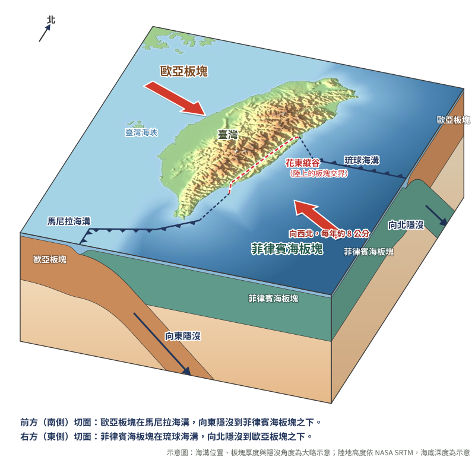

臺灣地形：中間高、東西低，山地偏東
先認識臺灣地形的三個特徵和形成原因，再看地圖找五大山脈、平原、盆地、台地和丘陵的位置，最後用 3D 剖面自己切開臺灣，並比較五種地形的立體模型、等高線和剖面。
一、地形特徵與成因
① 形狀狹長
臺灣島南北長約 394 公里，東西最寬約 144 公里，形狀又窄又長。
② 山多平原少
主要山脈大致呈南北走向。山地和丘陵面積廣大，約占總面積的 70%；平原和盆地則是人們最主要的生活空間。
③ 地勢高聳陡峭
海拔 3,000 公尺以上的高峰數量眾多，最高的玉山主峰有 3,952 公尺。

點圖可開新分頁看大圖。自繪示意圖。陸地高度依 NASA SRTM 衛星資料；海底深度、海溝位置與板塊厚度為大略示意。
二、地形分布圖
課本影片（翰林，掃課本 QR code 也可以看）：臺灣地形分布 ↗
山脈（示意）平原、縱谷
盆地台地丘陵
下方 3D 剖面的位置
縣市界
只標示課本「臺灣地形分布圖」上有的地形，位置與範圍為示意。點地形符號可看說明。
縣市界線採用內政部國土測繪中心圖資，經 Taiwan.TopoJSON 轉製與簡化。
點選地圖上的地形
點地圖上的山脈、平原、盆地或台地，這裡會顯示它的特色。
五大山脈（由東到西大致是）
- 海岸山脈：在花東縱谷東側，緊鄰太平洋。
- 中央山脈：縱貫南北、最長，是臺灣主要的分水嶺。
- 雪山山脈：在中央山脈西北側，主峰雪山（3,886 公尺）。
- 玉山山脈：主峰玉山（3,952 公尺），是臺灣最高峰。
- 阿里山山脈：在玉山山脈西側，是最西邊的山脈。
三、3D 地形剖面：自己選切開的位置
用拉桿選一個緯度，就能沿著東西方向把臺灣切開；也可以切換到「畫線」，在小地圖上任意畫一條剖面線。正面的切面就是地形剖面圖。
北緯23.50 度
剖面的位置
拖曳拉桿，或直接點、拖曳小地圖，改變東西剖面的緯度。
從剖面看出的三個特色
- 中間高、東西兩側低：高山集中在中部，往東西兩側降低。
- 山地偏東：最高的山脈靠近東部，所以東側坡陡、西側坡緩。
- 西部平原廣大、東部平原狹小：西部有寬廣的嘉南平原；東部只有夾在山脈間的花東縱谷平原。
以北緯 23.5 度為例。換到北部（例如 25 度）或南部（例如 22.5 度）切切看，比較有什麼不同。
對照課本：課本臺灣地形圖下方的剖面圖，就是沿著北回歸線附近，從嘉義東石切到花蓮大港口，依序經過嘉南平原、阿里山山脈、玉山山脈、中央山脈、花東縱谷平原和海岸山脈，和這裡預設的 23.5 度剖面幾乎一樣。
連結生活：西部地勢平緩、平原廣大，適合農業、交通與都市發展，人口大多集中在西部。
四、五種地形：立體、等高線、剖面一起看
選一種地形，左邊是立體模型，右邊是同一塊地的等高線地形圖和沿著 A–B 切開的地形剖面圖。比較等高線的疏密、數字和剖面的形狀。
等高線地形圖與剖面圖
五種地形比較表
| 地形 | 特徵 | 臺灣的情形（成因與利用） | 臺灣的例子 |
|---|---|---|---|
| 山地 | 高度差距顯著，坡度陡峭，通常高於 1,000 公尺 | 主要分布在本島中央偏東。中央山脈是臺灣島的脊梁，也是大多數河川的分水嶺；最高峰是玉山山脈的玉山主峰 | 五大山脈 |
| 丘陵 | 與山地比較，高度較低、坡度和緩、起伏較小，通常低於 1,000 公尺 | 多分布在山地的外緣。地勢較緩，可作為農業用地，常開闢成茶園、果園（例如日月潭紅茶就種在丘陵地區） | 新竹丘陵、苗栗丘陵 |
| 台地 | 頂部平坦、邊緣陡峭的平臺狀地形 | 原本是古代河川的沖積扇，後來地層抬升、再被河川切割而成，高度約 100～200 公尺。頂部平坦，可開發為農業、工業用地 | 林口台地、桃園台地、大肚台地、八卦台地、恆春台地 |
| 盆地 | 四周較高，中間低平的盆狀地形 | 散布在山地、丘陵和台地之間，臺北、臺中都會區都在盆地內。四周有山，通風不易、夏天容易悶熱；但也形成地形屏障，減少風災 | 臺北盆地、臺中盆地、埔里盆地、泰源盆地 |
| 平原 | 地勢低且開闊平坦 | 多由河川沖積而成，是農業生產的精華區，也是人口密集的地區。因為山脈位置偏東，平原主要分布在西部 | 嘉南平原（面積最大）、屏東平原、宜蘭平原、花東縱谷平原、濁水溪沖積平原 |
| 高原 | 高度比台地高，地表起伏不大且遼闊的高地 | 臺灣沒有高原，只有規模和高度都比較小的台地 | （無） |
台地和高原都是「上面平」的地形：台地比較矮、範圍小；高原比較高、範圍廣大。臺灣只有台地，沒有高原。
各種地形的海拔分界，請以課本的定義為準。